:format(webp)/cdn.vox-cdn.com/uploads/chorus_image/image/69660443/jbareham_210730_ecl1085_best_anime_0001.0.jpg)
There are many exciting shows like Full Metal Alchemist Brotherhood and Hunter X Hunter that I have'nt seen. But still, i have seen 50+ shows. So, here, we are going to list those shows that i have seen along with its MAL (MyAnimeList) rating and my personal rating.
DRAGON BALL Z (8.15)
DRAGON BALL Z (8.15)
Ranked #364 || Popularity #96 || My Rating 10/10
Five years after winning the World Martial Arts tournament, Gokuu is now living a peaceful life with his wife and son. This changes, however, with the arrival of a mysterious enemy named Raditz who presents himself as Gokuu's long-lost brother. He reveals that Gokuu is a warrior from the once powerful but now virtually extinct Saiyan race, whose homeworld was completely annihilated. When he was sent to Earth as a baby, Gokuu's sole purpose was to conquer and destroy the planet; but after suffering amnesia from a head injury, his violent and savage nature changed, and instead was raised as a kind and well-mannered boy, now fighting to protect others.
With his failed attempt at forcibly recruiting Gokuu as an ally, Raditz warns Gokuu's friends of a new threat that's rapidly approaching Earth—one that could plunge Earth into an intergalactic conflict and cause the heavens themselves to shake. A war will be fought over the seven mystical dragon balls, and only the strongest will survive in Dragon Ball Z.
DRAGON BALL SUPER (7.40)
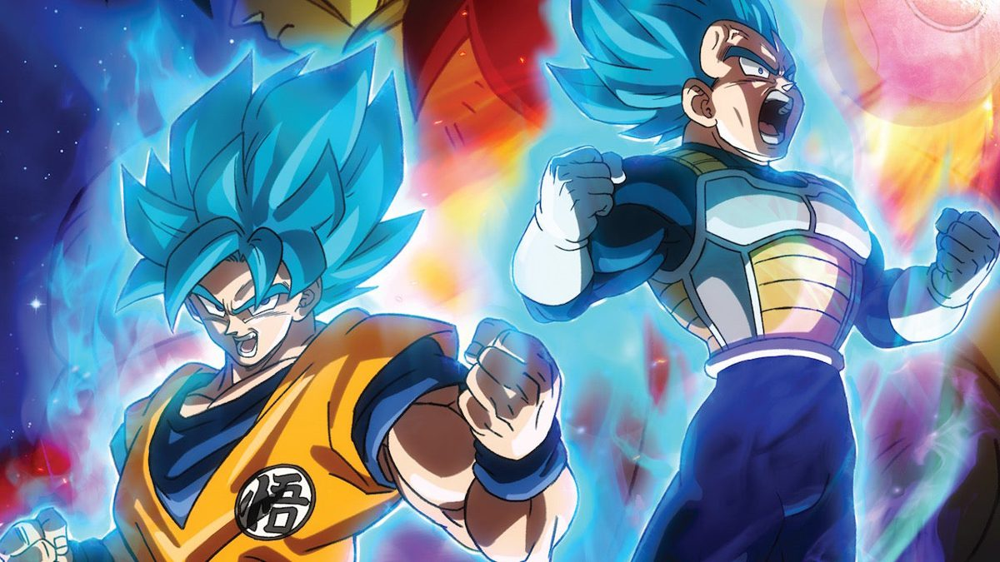
Five years after winning the World Martial Arts tournament, Gokuu is now living a peaceful life with his wife and son. This changes, however, with the arrival of a mysterious enemy named Raditz who presents himself as Gokuu's long-lost brother. He reveals that Gokuu is a warrior from the once powerful but now virtually extinct Saiyan race, whose homeworld was completely annihilated. When he was sent to Earth as a baby, Gokuu's sole purpose was to conquer and destroy the planet; but after suffering amnesia from a head injury, his violent and savage nature changed, and instead was raised as a kind and well-mannered boy, now fighting to protect others.
With his failed attempt at forcibly recruiting Gokuu as an ally, Raditz warns Gokuu's friends of a new threat that's rapidly approaching Earth—one that could plunge Earth into an intergalactic conflict and cause the heavens themselves to shake. A war will be fought over the seven mystical dragon balls, and only the strongest will survive in Dragon Ball Z.
DRAGON BALL SUPER (7.40)
Ranked #1951 || Popularity #216 || My Rating 8.5/10
Seven years after the events of Dragon Ball Z, Earth is at peace, and its people live free from any dangers lurking in the universe. However, this peace is short-lived; a sleeping evil awakens in the dark reaches of the galaxy: Beerus, the ruthless God of Destruction.
Disturbed by a prophecy that he will be defeated by a "Super Saiyan God," Beerus and his angelic attendant Whis start searching the universe for this mysterious being. Before long, they reach Earth where they encounter Gokuu Son, one of the planet's mightiest warriors, and his similarly powerful friends.
SEVEN DEADLY SINS (3 SEASONS) (7.77)
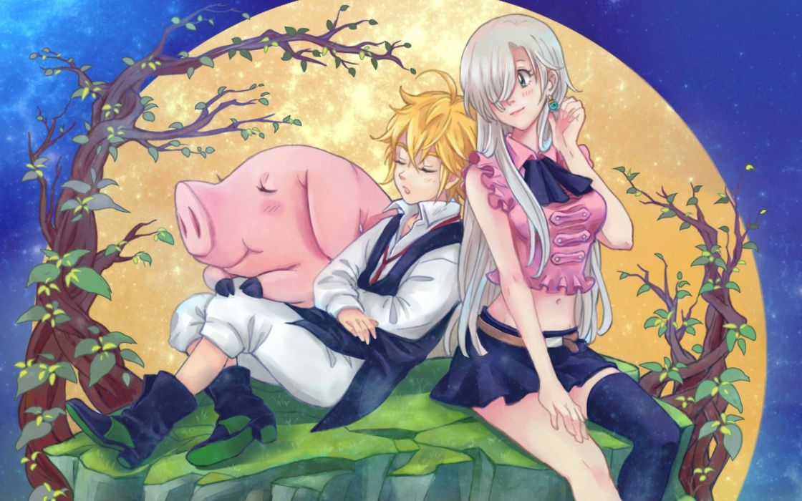
Seven years after the events of Dragon Ball Z, Earth is at peace, and its people live free from any dangers lurking in the universe. However, this peace is short-lived; a sleeping evil awakens in the dark reaches of the galaxy: Beerus, the ruthless God of Destruction.
Disturbed by a prophecy that he will be defeated by a "Super Saiyan God," Beerus and his angelic attendant Whis start searching the universe for this mysterious being. Before long, they reach Earth where they encounter Gokuu Son, one of the planet's mightiest warriors, and his similarly powerful friends.
SEVEN DEADLY SINS (3 SEASONS) (7.77)
Ranked #898 || Popularity #27 || My Rating 10/10
In a world similar to the European Middle Ages, the feared yet revered Holy Knights of Britannia use immensely powerful magic to protect the region of Britannia and its kingdoms. However, a small subset of the Knights supposedly betrayed their homeland and turned their blades against their comrades in an attempt to overthrow the ruler of Liones. They were defeated by the Holy Knights, but rumors continued to persist that these legendary knights, called the "Seven Deadly Sins," were still alive. Ten years later, the Holy Knights themselves staged a coup d’état, and thus became the new, tyrannical rulers of the Kingdom of Liones.
Based on the best-selling manga series of the same name, Nanatsu no Taizai follows the adventures of Elizabeth, the third princess of the Kingdom of Liones, and her search for the Seven Deadly Sins. With their help, she endeavors to not only take back her kingdom from the Holy Knights, but to also seek justice in an unjust world.
DEATH NOTE (8.63)
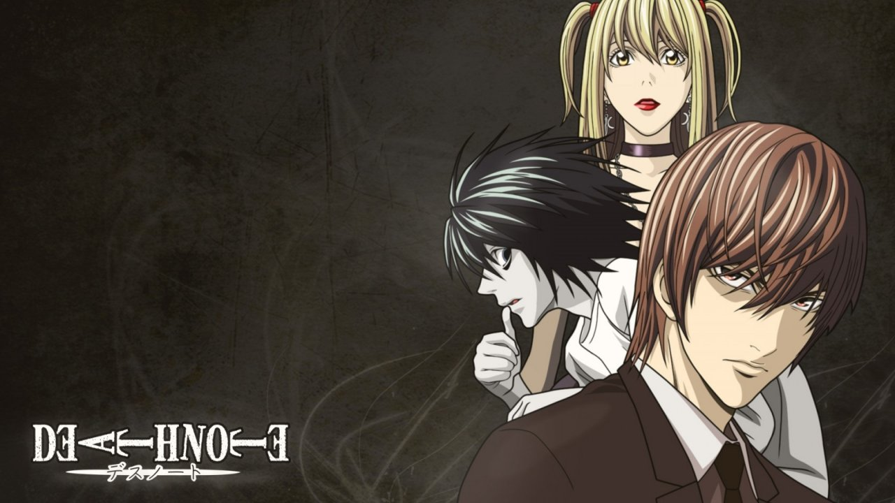
In a world similar to the European Middle Ages, the feared yet revered Holy Knights of Britannia use immensely powerful magic to protect the region of Britannia and its kingdoms. However, a small subset of the Knights supposedly betrayed their homeland and turned their blades against their comrades in an attempt to overthrow the ruler of Liones. They were defeated by the Holy Knights, but rumors continued to persist that these legendary knights, called the "Seven Deadly Sins," were still alive. Ten years later, the Holy Knights themselves staged a coup d’état, and thus became the new, tyrannical rulers of the Kingdom of Liones.
Based on the best-selling manga series of the same name, Nanatsu no Taizai follows the adventures of Elizabeth, the third princess of the Kingdom of Liones, and her search for the Seven Deadly Sins. With their help, she endeavors to not only take back her kingdom from the Holy Knights, but to also seek justice in an unjust world.
DEATH NOTE (8.63)
Ranked #62 || Popularity #1 || My Rating 10/10
A shinigami, as a god of death, can kill any person—provided they see their victim's face and write their victim's name in a notebook called a Death Note. One day, Ryuk, bored by the shinigami lifestyle and interested in seeing how a human would use a Death Note, drops one into the human realm.
High school student and prodigy Light Yagami stumbles upon the Death Note and—since he deplores the state of the world—tests the deadly notebook by writing a criminal's name in it. When the criminal dies immediately following his experiment with the Death Note, Light is greatly surprised and quickly recognizes how devastating the power that has fallen into his hands could be.
With this divine capability, Light decides to extinguish all criminals in order to build a new world where crime does not exist and people worship him as a god. Police, however, quickly discover that a serial killer is targeting criminals and, consequently, try to apprehend the culprit. To do this, the Japanese investigators count on the assistance of the best detective in the world: a young and eccentric man known only by the name of L.
THE IRREGULAR AT MAGIC HIGH SCHOOL (7.47)
A shinigami, as a god of death, can kill any person—provided they see their victim's face and write their victim's name in a notebook called a Death Note. One day, Ryuk, bored by the shinigami lifestyle and interested in seeing how a human would use a Death Note, drops one into the human realm.
High school student and prodigy Light Yagami stumbles upon the Death Note and—since he deplores the state of the world—tests the deadly notebook by writing a criminal's name in it. When the criminal dies immediately following his experiment with the Death Note, Light is greatly surprised and quickly recognizes how devastating the power that has fallen into his hands could be.
With this divine capability, Light decides to extinguish all criminals in order to build a new world where crime does not exist and people worship him as a god. Police, however, quickly discover that a serial killer is targeting criminals and, consequently, try to apprehend the culprit. To do this, the Japanese investigators count on the assistance of the best detective in the world: a young and eccentric man known only by the name of L.
THE IRREGULAR AT MAGIC HIGH SCHOOL (7.47)

Ranked #1722 || Popularity #124 || My Rating 5/10
In the dawn of the 21st century, magic, long thought to be folklore and fairy tales, has become a systematized technology and is taught as a technical skill. In First High School, the institution for magicians, students are segregated into two groups based on their entrance exam scores: "Blooms," those who receive high scores, are assigned to the First Course, while "Weeds" are reserve students assigned to the Second Course.
Mahouka Koukou no Rettousei follows the siblings, Tatsuya and Miyuki Shiba, who are enrolled in First High School. Upon taking the exam, the prodigious Miyuki is placed in the First Course, while Tatsuya is relegated to the Second Course. Though his practical test scores and status as a "Weed" show him to be magically inept, he possesses extraordinary technical knowledge, physical combat capabilities, and unique magic techniques—making Tatsuya the irregular at a magical high school.
DEATH PARADE (8.18)
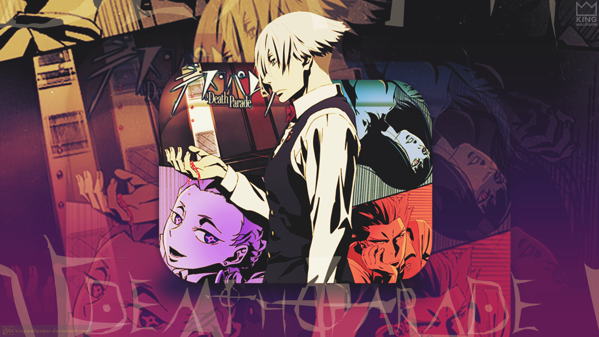
In the dawn of the 21st century, magic, long thought to be folklore and fairy tales, has become a systematized technology and is taught as a technical skill. In First High School, the institution for magicians, students are segregated into two groups based on their entrance exam scores: "Blooms," those who receive high scores, are assigned to the First Course, while "Weeds" are reserve students assigned to the Second Course.
Mahouka Koukou no Rettousei follows the siblings, Tatsuya and Miyuki Shiba, who are enrolled in First High School. Upon taking the exam, the prodigious Miyuki is placed in the First Course, while Tatsuya is relegated to the Second Course. Though his practical test scores and status as a "Weed" show him to be magically inept, he possesses extraordinary technical knowledge, physical combat capabilities, and unique magic techniques—making Tatsuya the irregular at a magical high school.
DEATH PARADE (8.18)
Ranked #333 || Popularity #48 || My Rating 7/10
After death, there is no heaven or hell, only a bar that stands between reincarnation and oblivion. There the attendant will, one after another, challenge pairs of the recently deceased to a random game in which their fate of either ascending into reincarnation or falling into the void will be wagered. Whether it's bowling, darts, air hockey, or anything in between, each person's true nature will be revealed in a ghastly parade of death and memories, dancing to the whims of the bar's master. Welcome to Quindecim, where Decim, arbiter of the afterlife, awaits!
Death Parade expands upon the original one-shot intended to train young animators. It follows yet more people receiving judgment—until a strange, black-haired guest causes Decim to begin questioning his own rulings.
THAT TIME I GOT REINCARNATED AS A SLIME (8.11)
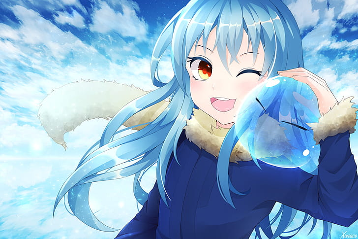
After death, there is no heaven or hell, only a bar that stands between reincarnation and oblivion. There the attendant will, one after another, challenge pairs of the recently deceased to a random game in which their fate of either ascending into reincarnation or falling into the void will be wagered. Whether it's bowling, darts, air hockey, or anything in between, each person's true nature will be revealed in a ghastly parade of death and memories, dancing to the whims of the bar's master. Welcome to Quindecim, where Decim, arbiter of the afterlife, awaits!
Death Parade expands upon the original one-shot intended to train young animators. It follows yet more people receiving judgment—until a strange, black-haired guest causes Decim to begin questioning his own rulings.
THAT TIME I GOT REINCARNATED AS A SLIME (8.11)
Ranked #411 || Popularity #101 || My Rating 8/10
Thirty-seven-year-old Satoru Mikami is a typical corporate worker, who is perfectly content with his monotonous lifestyle in Tokyo, other than failing to nail down a girlfriend even once throughout his life. In the midst of a casual encounter with his colleague, he falls victim to a random assailant on the streets and is stabbed. However, while succumbing to his injuries, a peculiar voice echoes in his mind, and recites a bunch of commands which the dying man cannot make sense of.
When Satoru regains consciousness, he discovers that he has reincarnated as a goop of slime in an unfamiliar realm. In doing so, he acquires newfound skills—notably, the power to devour anything and mimic its appearance and abilities. He then stumbles upon the sealed Catastrophe-level monster "Storm Dragon" Veldora who had been sealed away for the past 300 years for devastating a town to ashes. Sympathetic to his predicament, Satoru befriends him, promising to assist in destroying the seal. In return, Veldora bestows upon him the name Rimuru Tempest to grant him divine protection.
Now, liberated from the mundanities of his past life, Rimuru embarks on a fresh journey with a distinct goal in mind. As he grows accustomed to his new physique, his gooey antics ripple throughout the world, gradually altering his fate.
RE:ZERO - STARTING LIFE IN ANOTHER WORLD (8.26)
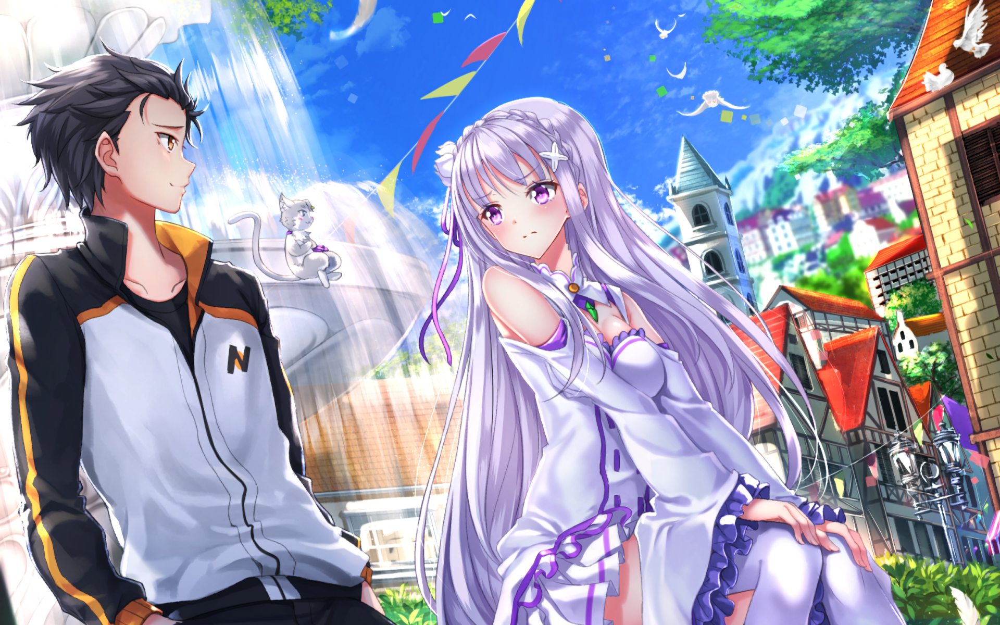
Thirty-seven-year-old Satoru Mikami is a typical corporate worker, who is perfectly content with his monotonous lifestyle in Tokyo, other than failing to nail down a girlfriend even once throughout his life. In the midst of a casual encounter with his colleague, he falls victim to a random assailant on the streets and is stabbed. However, while succumbing to his injuries, a peculiar voice echoes in his mind, and recites a bunch of commands which the dying man cannot make sense of.
When Satoru regains consciousness, he discovers that he has reincarnated as a goop of slime in an unfamiliar realm. In doing so, he acquires newfound skills—notably, the power to devour anything and mimic its appearance and abilities. He then stumbles upon the sealed Catastrophe-level monster "Storm Dragon" Veldora who had been sealed away for the past 300 years for devastating a town to ashes. Sympathetic to his predicament, Satoru befriends him, promising to assist in destroying the seal. In return, Veldora bestows upon him the name Rimuru Tempest to grant him divine protection.
Now, liberated from the mundanities of his past life, Rimuru embarks on a fresh journey with a distinct goal in mind. As he grows accustomed to his new physique, his gooey antics ripple throughout the world, gradually altering his fate.
RE:ZERO - STARTING LIFE IN ANOTHER WORLD (8.26)
Ranked #257 || Popularity #21 || My Rating 9/10
When Subaru Natsuki leaves the convenience store, the last thing he expects is to be wrenched from his everyday life and dropped into a fantasy world. Things aren't looking good for the bewildered teenager; however, not long after his arrival, he is attacked by some thugs. Armed with only a bag of groceries and a now useless cell phone, he is quickly beaten to a pulp. Fortunately, a mysterious beauty named Satella, in hot pursuit after the one who stole her insignia, happens upon Subaru and saves him. In order to thank the honest and kindhearted girl, Subaru offers to help in her search, and later that night, he even finds the whereabouts of that which she seeks. But unbeknownst to them, a much darker force stalks the pair from the shadows, and just minutes after locating the insignia, Subaru and Satella are brutally murdered.
However, Subaru immediately reawakens to a familiar scene—confronted by the same group of thugs, meeting Satella all over again—the enigma deepens as history inexplicably repeats itself.
DEVILMAN CRYBABY (7.80)
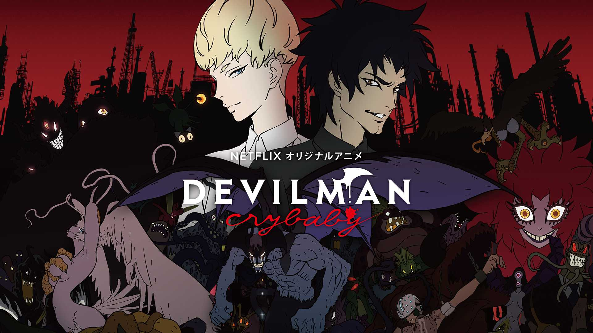
When Subaru Natsuki leaves the convenience store, the last thing he expects is to be wrenched from his everyday life and dropped into a fantasy world. Things aren't looking good for the bewildered teenager; however, not long after his arrival, he is attacked by some thugs. Armed with only a bag of groceries and a now useless cell phone, he is quickly beaten to a pulp. Fortunately, a mysterious beauty named Satella, in hot pursuit after the one who stole her insignia, happens upon Subaru and saves him. In order to thank the honest and kindhearted girl, Subaru offers to help in her search, and later that night, he even finds the whereabouts of that which she seeks. But unbeknownst to them, a much darker force stalks the pair from the shadows, and just minutes after locating the insignia, Subaru and Satella are brutally murdered.
However, Subaru immediately reawakens to a familiar scene—confronted by the same group of thugs, meeting Satella all over again—the enigma deepens as history inexplicably repeats itself.
DEVILMAN CRYBABY (7.80)
Ranked #850 || Popularity #128 || My Rating 10/10
Devils cannot take form without a living host. However, if the will of an individual is strong enough, they can overcome the demon and make its power their own, becoming a Devilman.
Weak and unassuming, Akira Fudou has always had a bleeding heart. So when his childhood friend Ryou Asuka asks for his help in uncovering devils, Akira accepts without hesitation. However, to Akira's surprise, the place they go to is Sabbath: an immoral party of debauchery and degeneracy. Amidst bloodshed and death, demons possess the partiers, turning their bodies into grotesque monsters, and begin wreaking havoc. In a reckless attempt to save his best friend, Akira unwittingly merges with the devil Amon and becomes a Devilman, gaining the power to defeat the remaining demons.
Though it grants him great power, this new partnership awakens an insatiable and primeval part of Akira. Having the body of a devil but the same crybaby heart, Akira works alongside Ryou, destroying those that harm humanity and his loved ones
HAIKYUU !! (8.47)
Devils cannot take form without a living host. However, if the will of an individual is strong enough, they can overcome the demon and make its power their own, becoming a Devilman.
Weak and unassuming, Akira Fudou has always had a bleeding heart. So when his childhood friend Ryou Asuka asks for his help in uncovering devils, Akira accepts without hesitation. However, to Akira's surprise, the place they go to is Sabbath: an immoral party of debauchery and degeneracy. Amidst bloodshed and death, demons possess the partiers, turning their bodies into grotesque monsters, and begin wreaking havoc. In a reckless attempt to save his best friend, Akira unwittingly merges with the devil Amon and becomes a Devilman, gaining the power to defeat the remaining demons.
Though it grants him great power, this new partnership awakens an insatiable and primeval part of Akira. Having the body of a devil but the same crybaby heart, Akira works alongside Ryou, destroying those that harm humanity and his loved ones
HAIKYUU !! (8.47)
Ranked #123 || Popularity #37 || My Rating 9/10
Inspired after watching a volleyball ace nicknamed "Little Giant" in action, small-statured Shouyou Hinata revives the volleyball club at his middle school. The newly-formed team even makes it to a tournament; however, their first match turns out to be their last when they are brutally squashed by the "King of the Court," Tobio Kageyama. Hinata vows to surpass Kageyama, and so after graduating from middle school, he joins Karasuno High School's volleyball team—only to find that his sworn rival, Kageyama, is now his teammate.
Thanks to his short height, Hinata struggles to find his role on the team, even with his superior jumping power. Surprisingly, Kageyama has his own problems that only Hinata can help with, and learning to work together appears to be the only way for the team to be successful. Based on Haruichi Furudate's popular shounen manga of the same name, Haikyuu!! is an exhilarating and emotional sports comedy following two determined athletes as they attempt to patch a heated rivalry in order to make their high school volleyball team the best in Japan.
DEMON SLAYER (8.58)
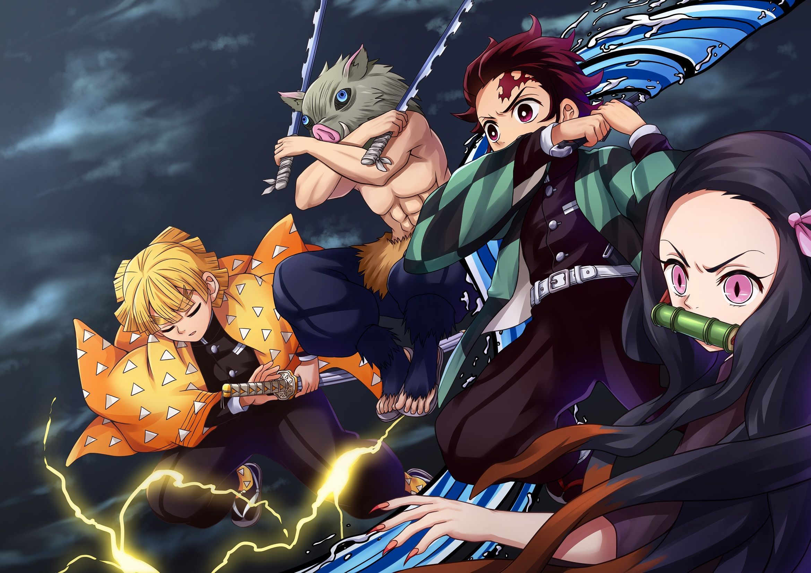
Inspired after watching a volleyball ace nicknamed "Little Giant" in action, small-statured Shouyou Hinata revives the volleyball club at his middle school. The newly-formed team even makes it to a tournament; however, their first match turns out to be their last when they are brutally squashed by the "King of the Court," Tobio Kageyama. Hinata vows to surpass Kageyama, and so after graduating from middle school, he joins Karasuno High School's volleyball team—only to find that his sworn rival, Kageyama, is now his teammate.
Thanks to his short height, Hinata struggles to find his role on the team, even with his superior jumping power. Surprisingly, Kageyama has his own problems that only Hinata can help with, and learning to work together appears to be the only way for the team to be successful. Based on Haruichi Furudate's popular shounen manga of the same name, Haikyuu!! is an exhilarating and emotional sports comedy following two determined athletes as they attempt to patch a heated rivalry in order to make their high school volleyball team the best in Japan.
DEMON SLAYER (8.58)
Ranking #78 || Popularity #13 || My Rating 8/10
Ever since the death of his father, the burden of supporting the family has fallen upon Tanjirou Kamado's shoulders. Though living impoverished on a remote mountain, the Kamado family are able to enjoy a relatively peaceful and happy life. One day, Tanjirou decides to go down to the local village to make a little money selling charcoal. On his way back, night falls, forcing Tanjirou to take shelter in the house of a strange man, who warns him of the existence of flesh-eating demons that lurk in the woods at night.
When he finally arrives back home the next day, he is met with a horrifying sight—his whole family has been slaughtered. Worse still, the sole survivor is his sister Nezuko, who has been turned into a bloodthirsty demon. Consumed by rage and hatred, Tanjirou swears to avenge his family and stay by his only remaining sibling. Alongside the mysterious group calling themselves the Demon Slayer Corps, Tanjirou will do whatever it takes to slay the demons and protect the remnants of his beloved sister's humanity.
PARASITE (8.37)
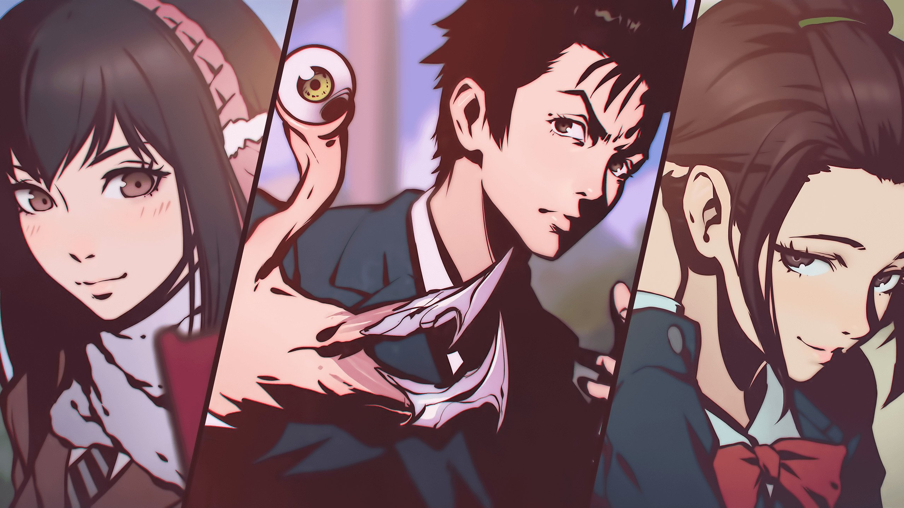
Ever since the death of his father, the burden of supporting the family has fallen upon Tanjirou Kamado's shoulders. Though living impoverished on a remote mountain, the Kamado family are able to enjoy a relatively peaceful and happy life. One day, Tanjirou decides to go down to the local village to make a little money selling charcoal. On his way back, night falls, forcing Tanjirou to take shelter in the house of a strange man, who warns him of the existence of flesh-eating demons that lurk in the woods at night.
When he finally arrives back home the next day, he is met with a horrifying sight—his whole family has been slaughtered. Worse still, the sole survivor is his sister Nezuko, who has been turned into a bloodthirsty demon. Consumed by rage and hatred, Tanjirou swears to avenge his family and stay by his only remaining sibling. Alongside the mysterious group calling themselves the Demon Slayer Corps, Tanjirou will do whatever it takes to slay the demons and protect the remnants of his beloved sister's humanity.
PARASITE (8.37)
Ranking #174 || Popularity #41 || My Rating 8/10
All of a sudden, they arrived: parasitic aliens that descended upon Earth and quickly infiltrated humanity by burrowing into the brains of vulnerable targets. These insatiable beings acquire full control of their host and are able to morph into a variety of forms in order to feed on unsuspecting prey.
Sixteen-year-old high school student Shinichi Izumi falls victim to one of these parasites, but it fails to take over his brain, ending up in his right hand instead. Unable to relocate, the parasite, now named Migi, has no choice but to rely on Shinichi in order to stay alive. Thus, the pair is forced into an uneasy coexistence and must defend themselves from hostile parasites that hope to eradicate this new threat to their species.
STEINS ; GATE (9.10)
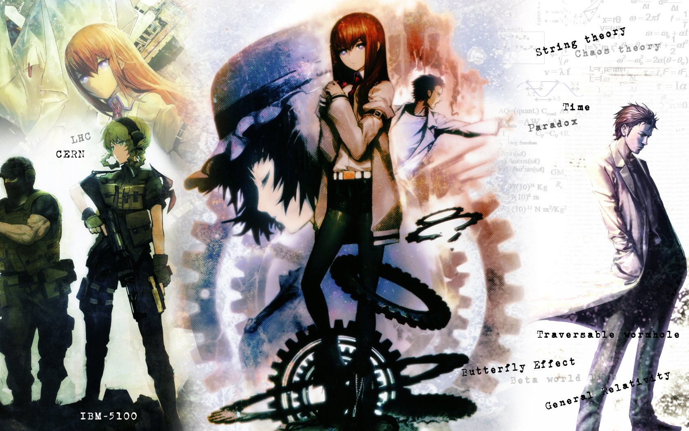
All of a sudden, they arrived: parasitic aliens that descended upon Earth and quickly infiltrated humanity by burrowing into the brains of vulnerable targets. These insatiable beings acquire full control of their host and are able to morph into a variety of forms in order to feed on unsuspecting prey.
Sixteen-year-old high school student Shinichi Izumi falls victim to one of these parasites, but it fails to take over his brain, ending up in his right hand instead. Unable to relocate, the parasite, now named Migi, has no choice but to rely on Shinichi in order to stay alive. Thus, the pair is forced into an uneasy coexistence and must defend themselves from hostile parasites that hope to eradicate this new threat to their species.
STEINS ; GATE (9.10)
Ranking #3 || Popularity #11 || My Rating 10/10
The self-proclaimed mad scientist Rintarou Okabe rents out a room in a rickety old building in Akihabara, where he indulges himself in his hobby of inventing prospective "future gadgets" with fellow lab members: Mayuri Shiina, his air-headed childhood friend, and Hashida Itaru, a perverted hacker nicknamed "Daru." The three pass the time by tinkering with their most promising contraption yet, a machine dubbed the "Phone Microwave," which performs the strange function of morphing bananas into piles of green gel.
Though miraculous in itself, the phenomenon doesn't provide anything concrete in Okabe's search for a scientific breakthrough; that is, until the lab members are spurred into action by a string of mysterious happenings before stumbling upon an unexpected success—the Phone Microwave can send emails to the past, altering the flow of history.
Adapted from the critically acclaimed visual novel by 5pb. and Nitroplus, Steins;Gate takes Okabe through the depths of scientific theory and practicality. Forced across the diverging threads of past and present, Okabe must shoulder the burdens that come with holding the key to the realm of time.
FOOD WARS (8.23)
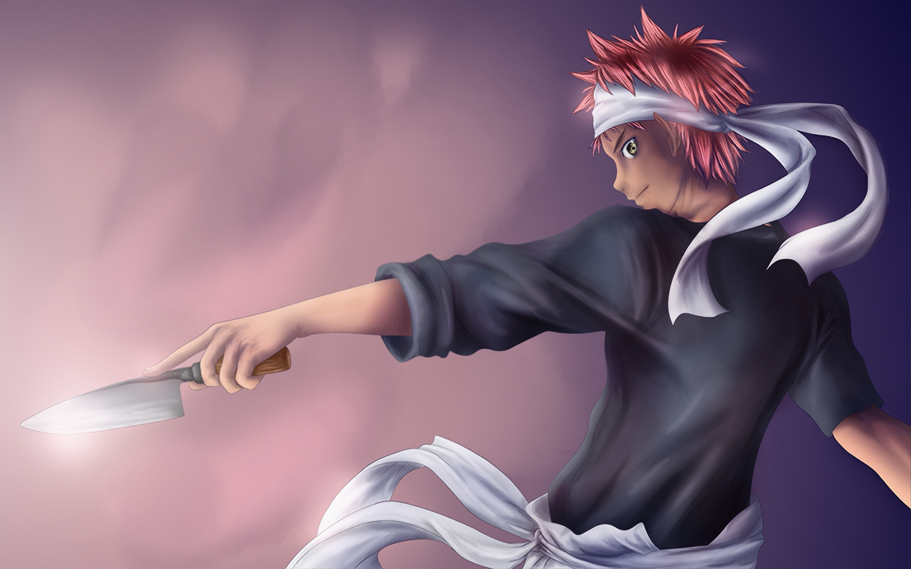
The self-proclaimed mad scientist Rintarou Okabe rents out a room in a rickety old building in Akihabara, where he indulges himself in his hobby of inventing prospective "future gadgets" with fellow lab members: Mayuri Shiina, his air-headed childhood friend, and Hashida Itaru, a perverted hacker nicknamed "Daru." The three pass the time by tinkering with their most promising contraption yet, a machine dubbed the "Phone Microwave," which performs the strange function of morphing bananas into piles of green gel.
Though miraculous in itself, the phenomenon doesn't provide anything concrete in Okabe's search for a scientific breakthrough; that is, until the lab members are spurred into action by a string of mysterious happenings before stumbling upon an unexpected success—the Phone Microwave can send emails to the past, altering the flow of history.
Adapted from the critically acclaimed visual novel by 5pb. and Nitroplus, Steins;Gate takes Okabe through the depths of scientific theory and practicality. Forced across the diverging threads of past and present, Okabe must shoulder the burdens that come with holding the key to the realm of time.
FOOD WARS (8.23)
Ranking #303 || Popularity #53 || My Rating 6/10
Ever since he was a child, fifteen-year-old Souma Yukihira has helped his father by working as the sous chef in the restaurant his father runs and owns. Throughout the years, Souma developed a passion for entertaining his customers with his creative, skilled, and daring culinary creations. His dream is to someday own his family's restaurant as its head chef.
Yet when his father suddenly decides to close the restaurant to test his cooking abilities in restaurants around the world, he sends Souma to Tootsuki Culinary Academy, an elite cooking school where only 10 percent of the students graduate. The institution is famous for its "Shokugeki" or "food wars," where students face off in intense, high-stakes cooking showdowns.
As Souma and his new schoolmates struggle to survive the extreme lifestyle of Tootsuki, more and greater challenges await him, putting his years of learning under his father to the test.
STRIKE THE BLOOD (7.09)
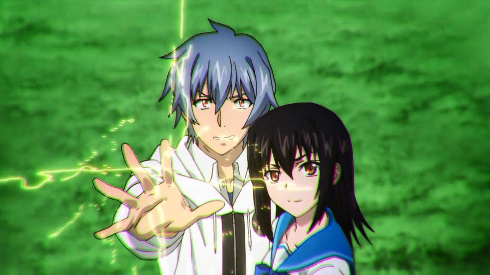
Ever since he was a child, fifteen-year-old Souma Yukihira has helped his father by working as the sous chef in the restaurant his father runs and owns. Throughout the years, Souma developed a passion for entertaining his customers with his creative, skilled, and daring culinary creations. His dream is to someday own his family's restaurant as its head chef.
Yet when his father suddenly decides to close the restaurant to test his cooking abilities in restaurants around the world, he sends Souma to Tootsuki Culinary Academy, an elite cooking school where only 10 percent of the students graduate. The institution is famous for its "Shokugeki" or "food wars," where students face off in intense, high-stakes cooking showdowns.
As Souma and his new schoolmates struggle to survive the extreme lifestyle of Tootsuki, more and greater challenges await him, putting his years of learning under his father to the test.
STRIKE THE BLOOD (7.09)
Ranking #3369 || Popularity #272 || My Rating 6/10
Kojou Akatsuki's days as an ordinary high school student in the Demon District of Itogami Island come to an abrupt end after a fateful encounter leaves him with the remarkable abilities of a vampire.
It isn't long before he is thrust into the center of attention when it is discovered that he is the fourth primogenitor, an immensely powerful vampire whom most consider to be merely a legend. Fearing Kojou's destructive potential, the Lion King Organization sends in an apprentice sword-shaman, Yukina Himeragi, to monitor, and should he become a threat, kill the boy deemed the world's most powerful vampire. Forced together by circumstance, the two form an unlikely alliance as Kojou comes to terms with his abilities and they both struggle to protect the city from various emerging chaotic forces.
MONSTER (8.80)
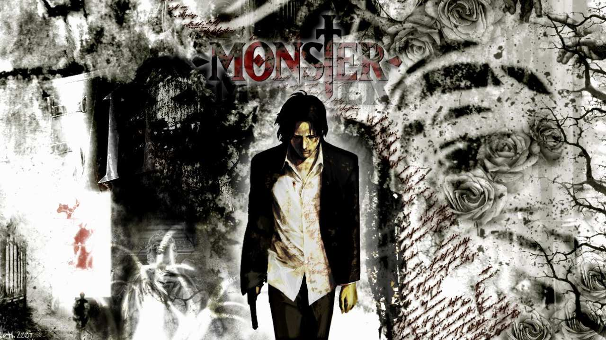
Kojou Akatsuki's days as an ordinary high school student in the Demon District of Itogami Island come to an abrupt end after a fateful encounter leaves him with the remarkable abilities of a vampire.
It isn't long before he is thrust into the center of attention when it is discovered that he is the fourth primogenitor, an immensely powerful vampire whom most consider to be merely a legend. Fearing Kojou's destructive potential, the Lion King Organization sends in an apprentice sword-shaman, Yukina Himeragi, to monitor, and should he become a threat, kill the boy deemed the world's most powerful vampire. Forced together by circumstance, the two form an unlikely alliance as Kojou comes to terms with his abilities and they both struggle to protect the city from various emerging chaotic forces.
MONSTER (8.80)
Ranking #28 || Popularity #159 || My Rating 10/10
Dr. Kenzou Tenma, an elite neurosurgeon recently engaged to his hospital director's daughter, is well on his way to ascending the hospital hierarchy. That is until one night, a seemingly small event changes Dr. Tenma's life forever. While preparing to perform surgery on someone, he gets a call from the hospital director telling him to switch patients and instead perform life-saving brain surgery on a famous performer. His fellow doctors, fiancée, and the hospital director applaud his accomplishment; but because of the switch, a poor immigrant worker is dead, causing Dr. Tenma to have a crisis of conscience.
So when a similar situation arises, Dr. Tenma stands his ground and chooses to perform surgery on the young boy Johan Liebert instead of the town's mayor. Unfortunately, this choice leads to serious ramifications for Dr. Tenma—losing his social standing being one of them. However, with the mysterious death of the director and two other doctors, Dr. Tenma's position is restored. With no evidence to convict him, he is released and goes on to attain the position of hospital director.
Nine years later when Dr. Tenma saves the life of a criminal, his past comes back to haunt him—once again, he comes face to face with the monster he operated on. He must now embark on a quest of pursuit to make amends for the havoc spread by the one he saved.
07 GHOSTS (7.21)
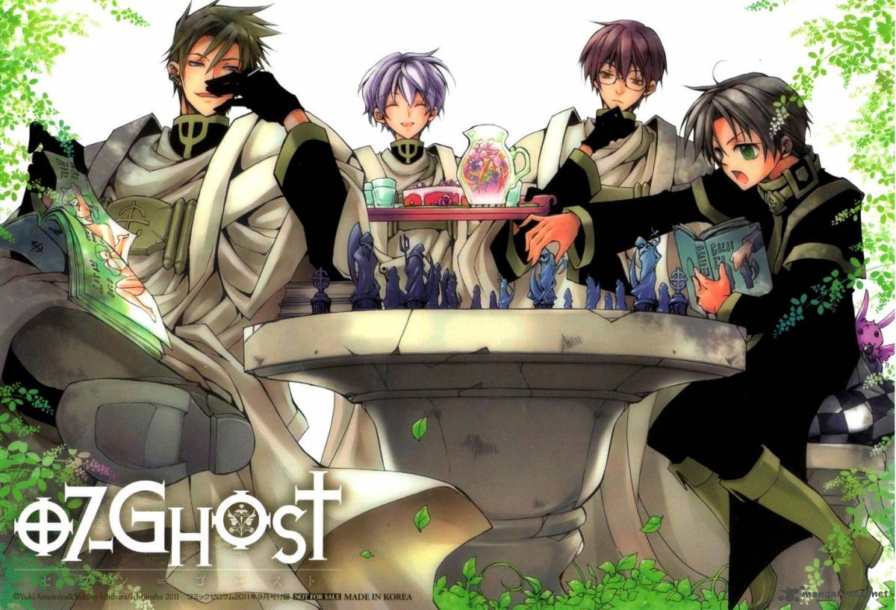
Dr. Kenzou Tenma, an elite neurosurgeon recently engaged to his hospital director's daughter, is well on his way to ascending the hospital hierarchy. That is until one night, a seemingly small event changes Dr. Tenma's life forever. While preparing to perform surgery on someone, he gets a call from the hospital director telling him to switch patients and instead perform life-saving brain surgery on a famous performer. His fellow doctors, fiancée, and the hospital director applaud his accomplishment; but because of the switch, a poor immigrant worker is dead, causing Dr. Tenma to have a crisis of conscience.
So when a similar situation arises, Dr. Tenma stands his ground and chooses to perform surgery on the young boy Johan Liebert instead of the town's mayor. Unfortunately, this choice leads to serious ramifications for Dr. Tenma—losing his social standing being one of them. However, with the mysterious death of the director and two other doctors, Dr. Tenma's position is restored. With no evidence to convict him, he is released and goes on to attain the position of hospital director.
Nine years later when Dr. Tenma saves the life of a criminal, his past comes back to haunt him—once again, he comes face to face with the monster he operated on. He must now embark on a quest of pursuit to make amends for the havoc spread by the one he saved.
07 GHOSTS (7.21)
Ranking #2819 || Popularity #911 || My Rating 6/10
Barsburg Empire's Military Academy is known for training elites who bring victory to the empire. Students of the academy freely utilize an ability called "Zaiphon" to fight, while the types of Zaiphon usable depends on the nature of the soldier.
Teito Klein, a student at the academy, is one of the most promising soldiers produced. Although ridiculed by everyone for being a sklave (German for slave) with no memories of his past, he is befriended by a fellow student called Mikage. While preparing for the final exam, Teito uncovers a dark secret related to his past. When an attempt to assassinate Ayanami, a high-ranking official who killed his father, fails, Teito is locked away awaiting punishment.
Only wanting the best for Teito, Mikage helps him escape. Teito ends up at the 7th District Church where he is taken in by the bishops. It is here that Teito attempts to evade the grasp of Ayanami and the Military, so he can rediscover his memories and learn why he is the person that can change the fate of the world.
MY HERO ACADEMIA (7.99)
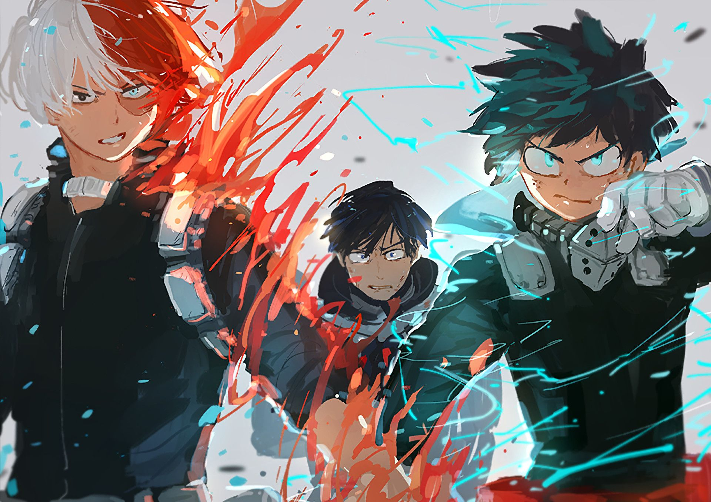
Barsburg Empire's Military Academy is known for training elites who bring victory to the empire. Students of the academy freely utilize an ability called "Zaiphon" to fight, while the types of Zaiphon usable depends on the nature of the soldier.
Teito Klein, a student at the academy, is one of the most promising soldiers produced. Although ridiculed by everyone for being a sklave (German for slave) with no memories of his past, he is befriended by a fellow student called Mikage. While preparing for the final exam, Teito uncovers a dark secret related to his past. When an attempt to assassinate Ayanami, a high-ranking official who killed his father, fails, Teito is locked away awaiting punishment.
Only wanting the best for Teito, Mikage helps him escape. Teito ends up at the 7th District Church where he is taken in by the bishops. It is here that Teito attempts to evade the grasp of Ayanami and the Military, so he can rediscover his memories and learn why he is the person that can change the fate of the world.
MY HERO ACADEMIA (7.99)
Ranking #566 || Popularity #6 || My Rating 7/10
The appearance of "quirks," newly discovered super powers, has been steadily increasing over the years, with 80 percent of humanity possessing various abilities from manipulation of elements to shapeshifting. This leaves the remainder of the world completely powerless, and Izuku Midoriya is one such individual.
Since he was a child, the ambitious middle schooler has wanted nothing more than to be a hero. Izuku's unfair fate leaves him admiring heroes and taking notes on them whenever he can. But it seems that his persistence has borne some fruit: Izuku meets the number one hero and his personal idol, All Might. All Might's quirk is a unique ability that can be inherited, and he has chosen Izuku to be his successor!
Enduring many months of grueling training, Izuku enrolls in UA High, a prestigious high school famous for its excellent hero training program, and this year's freshmen look especially promising. With his bizarre but talented classmates and the looming threat of a villainous organization, Izuku will soon learn what it really means to be a hero.
PROMISED NEVERLAND (8.58)
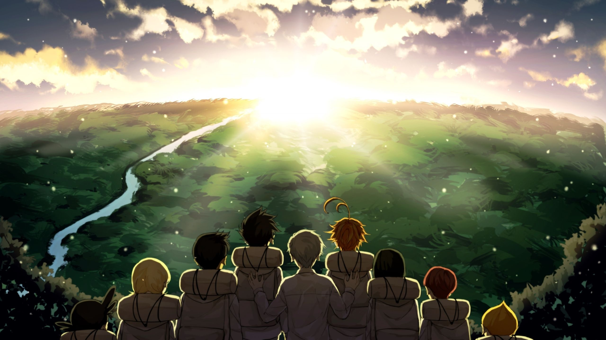
The appearance of "quirks," newly discovered super powers, has been steadily increasing over the years, with 80 percent of humanity possessing various abilities from manipulation of elements to shapeshifting. This leaves the remainder of the world completely powerless, and Izuku Midoriya is one such individual.
Since he was a child, the ambitious middle schooler has wanted nothing more than to be a hero. Izuku's unfair fate leaves him admiring heroes and taking notes on them whenever he can. But it seems that his persistence has borne some fruit: Izuku meets the number one hero and his personal idol, All Might. All Might's quirk is a unique ability that can be inherited, and he has chosen Izuku to be his successor!
Enduring many months of grueling training, Izuku enrolls in UA High, a prestigious high school famous for its excellent hero training program, and this year's freshmen look especially promising. With his bizarre but talented classmates and the looming threat of a villainous organization, Izuku will soon learn what it really means to be a hero.
PROMISED NEVERLAND (8.58)
Ranking #77 || Popularity #38 || My Rating 9/10
Surrounded by a forest and a gated entrance, the Grace Field House is inhabited by orphans happily living together as one big family, looked after by their "Mama," Isabella. Although they are required to take tests daily, the children are free to spend their time as they see fit, usually playing outside, as long as they do not venture too far from the orphanage—a rule they are expected to follow no matter what. However, all good times must come to an end, as every few months, a child is adopted and sent to live with their new family, never to be heard from again.
However, the three oldest siblings have their suspicions about what is actually happening at the orphanage, and they are about to discover the cruel fate that awaits the children living at Grace Field, including the twisted nature of their beloved Mama.
ATTACK ON TITAN (8.51)
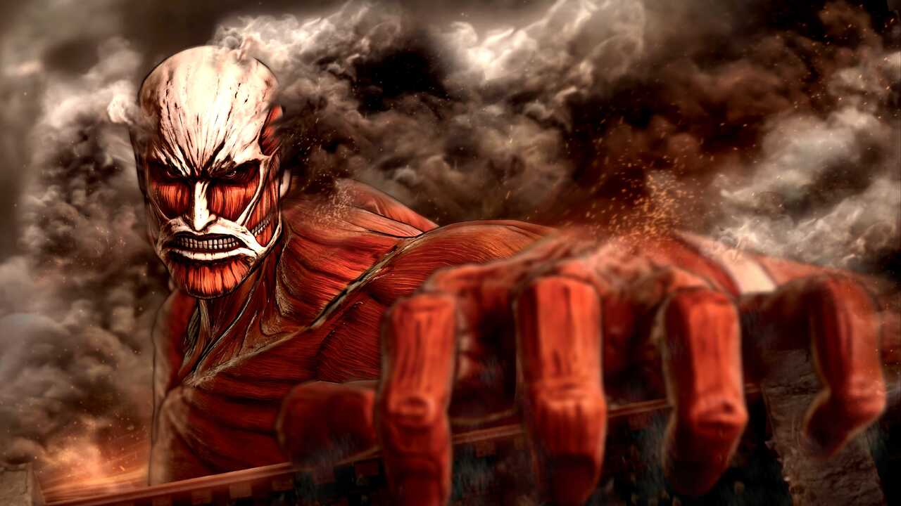
Surrounded by a forest and a gated entrance, the Grace Field House is inhabited by orphans happily living together as one big family, looked after by their "Mama," Isabella. Although they are required to take tests daily, the children are free to spend their time as they see fit, usually playing outside, as long as they do not venture too far from the orphanage—a rule they are expected to follow no matter what. However, all good times must come to an end, as every few months, a child is adopted and sent to live with their new family, never to be heard from again.
However, the three oldest siblings have their suspicions about what is actually happening at the orphanage, and they are about to discover the cruel fate that awaits the children living at Grace Field, including the twisted nature of their beloved Mama.
ATTACK ON TITAN (8.51)
Ranking #107 || Popularity #2 || My Rating 10/10
Centuries ago, mankind was slaughtered to near extinction by monstrous humanoid creatures called titans, forcing humans to hide in fear behind enormous concentric walls. What makes these giants truly terrifying is that their taste for human flesh is not born out of hunger but what appears to be out of pleasure. To ensure their survival, the remnants of humanity began living within defensive barriers, resulting in one hundred years without a single titan encounter. However, that fragile calm is soon shattered when a colossal titan manages to breach the supposedly impregnable outer wall, reigniting the fight for survival against the man-eating abominations.
After witnessing a horrific personal loss at the hands of the invading creatures, Eren Yeager dedicates his life to their eradication by enlisting into the Survey Corps, an elite military unit that combats the merciless humanoids outside the protection of the walls. Based on Hajime Isayama's award-winning manga, Shingeki no Kyojin follows Eren, along with his adopted sister Mikasa Ackerman and his childhood friend Armin Arlert, as they join the brutal war against the titans and race to discover a way of defeating them before the last walls are breached.
SWORD ART ONLINE (7.21)
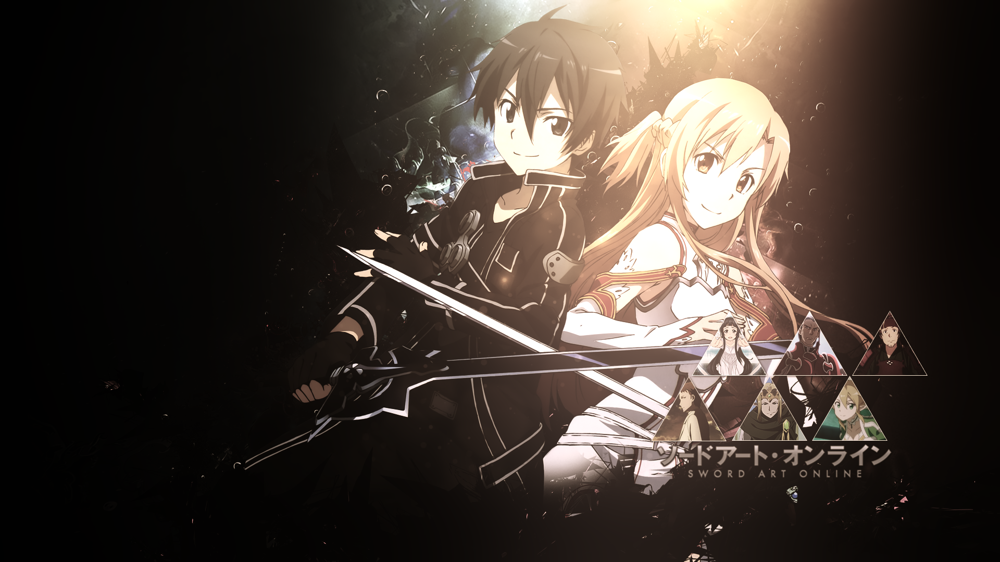
Centuries ago, mankind was slaughtered to near extinction by monstrous humanoid creatures called titans, forcing humans to hide in fear behind enormous concentric walls. What makes these giants truly terrifying is that their taste for human flesh is not born out of hunger but what appears to be out of pleasure. To ensure their survival, the remnants of humanity began living within defensive barriers, resulting in one hundred years without a single titan encounter. However, that fragile calm is soon shattered when a colossal titan manages to breach the supposedly impregnable outer wall, reigniting the fight for survival against the man-eating abominations.
After witnessing a horrific personal loss at the hands of the invading creatures, Eren Yeager dedicates his life to their eradication by enlisting into the Survey Corps, an elite military unit that combats the merciless humanoids outside the protection of the walls. Based on Hajime Isayama's award-winning manga, Shingeki no Kyojin follows Eren, along with his adopted sister Mikasa Ackerman and his childhood friend Armin Arlert, as they join the brutal war against the titans and race to discover a way of defeating them before the last walls are breached.
SWORD ART ONLINE (7.21)
Ranking #2810 || Popularity #4 || My Rating 6/10
In the year 2022, virtual reality has progressed by leaps and bounds, and a massive online role-playing game called Sword Art Online (SAO) is launched. With the aid of "NerveGear" technology, players can control their avatars within the game using nothing but their own thoughts.
Kazuto Kirigaya, nicknamed "Kirito," is among the lucky few enthusiasts who get their hands on the first shipment of the game. He logs in to find himself, with ten-thousand others, in the scenic and elaborate world of Aincrad, one full of fantastic medieval weapons and gruesome monsters. However, in a cruel turn of events, the players soon realize they cannot log out; the game's creator has trapped them in his new world until they complete all one hundred levels of the game.
In order to escape Aincrad, Kirito will now have to interact and cooperate with his fellow players. Some are allies, while others are foes, like Asuna Yuuki, who commands the leading group attempting to escape from the ruthless game. To make matters worse, Sword Art Online is not all fun and games: if they die in Aincrad, they die in real life. Kirito must adapt to his new reality, fight for his survival, and hopefully break free from his virtual hell.
ASSASSINATION CLASSROOM (8.11)
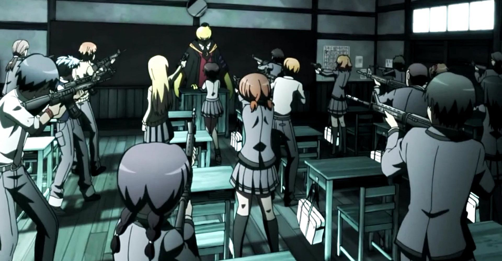
In the year 2022, virtual reality has progressed by leaps and bounds, and a massive online role-playing game called Sword Art Online (SAO) is launched. With the aid of "NerveGear" technology, players can control their avatars within the game using nothing but their own thoughts.
Kazuto Kirigaya, nicknamed "Kirito," is among the lucky few enthusiasts who get their hands on the first shipment of the game. He logs in to find himself, with ten-thousand others, in the scenic and elaborate world of Aincrad, one full of fantastic medieval weapons and gruesome monsters. However, in a cruel turn of events, the players soon realize they cannot log out; the game's creator has trapped them in his new world until they complete all one hundred levels of the game.
In order to escape Aincrad, Kirito will now have to interact and cooperate with his fellow players. Some are allies, while others are foes, like Asuna Yuuki, who commands the leading group attempting to escape from the ruthless game. To make matters worse, Sword Art Online is not all fun and games: if they die in Aincrad, they die in real life. Kirito must adapt to his new reality, fight for his survival, and hopefully break free from his virtual hell.
ASSASSINATION CLASSROOM (8.11)
Ranking #417 || Popularity #34 || My Rating 8/10
When a mysterious creature chops the moon down to a permanent crescent, the students of class 3-E of Kunugigaoka Middle School find themselves confronted with an enormous task: assassinate the creature responsible for the disaster before Earth suffers a similar fate. However, the monster, dubbed Koro-sensei (the indestructible teacher), is able to fly at speeds of up to Mach 20, which he demonstrates freely, leaving any attempt to subdue him in his extraterrestrial dust. Furthermore, the misfits of 3-E soon find that the strange, tentacled beast is more than just indomitable—he is the best teacher they have ever had!
Adapted from the humorous hit manga by Yuusei Matsui, Ansatsu Kyoushitsu tells the story of these junior high pupils as they polish their assassination skills and grow in order to stand strong against the oppressive school system, their own life problems, and one day, Koro-sensei.
GRIMGAR OF FANTASY AND ASH (7.67)
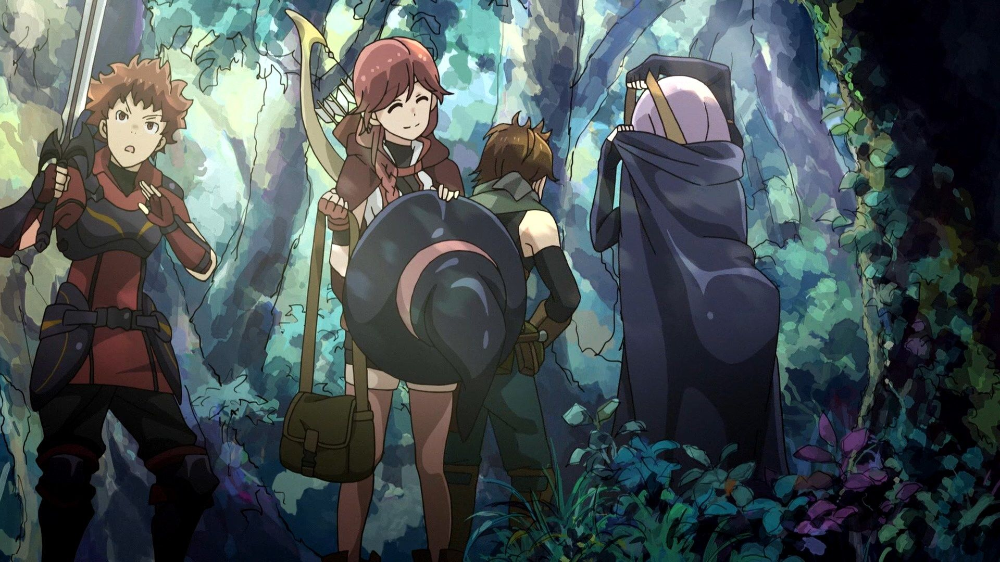
When a mysterious creature chops the moon down to a permanent crescent, the students of class 3-E of Kunugigaoka Middle School find themselves confronted with an enormous task: assassinate the creature responsible for the disaster before Earth suffers a similar fate. However, the monster, dubbed Koro-sensei (the indestructible teacher), is able to fly at speeds of up to Mach 20, which he demonstrates freely, leaving any attempt to subdue him in his extraterrestrial dust. Furthermore, the misfits of 3-E soon find that the strange, tentacled beast is more than just indomitable—he is the best teacher they have ever had!
Adapted from the humorous hit manga by Yuusei Matsui, Ansatsu Kyoushitsu tells the story of these junior high pupils as they polish their assassination skills and grow in order to stand strong against the oppressive school system, their own life problems, and one day, Koro-sensei.
GRIMGAR OF FANTASY AND ASH (7.67)
Ranking #1139 || Popularity #235 || My Rating 7/10
Fear, survival, instinct. Thrown into a foreign land with nothing but hazy memories and the knowledge of their name, they can feel only these three emotions resonating deep within their souls. A group of strangers is given no other choice than to accept the only paying job in this game-like world—the role of a soldier in the Reserve Army—and eliminate anything that threatens the peace in their new world, Grimgar.
When all of the stronger candidates join together, those left behind must create a party together to survive: Manato, a charismatic leader and priest; Haruhiro, a nervous thief; Yume, a cheerful hunter; Shihoru, a shy mage; Mogzo, a kind warrior; and Ranta, a rowdy dark knight. Despite its resemblance to one, this is no game—there are no redos or respawns; it is kill or be killed.
It is now up to this ragtag group of unlikely fighters to survive together in a world where life and death are separated only by a fine line.
KINGDOM (8.00)
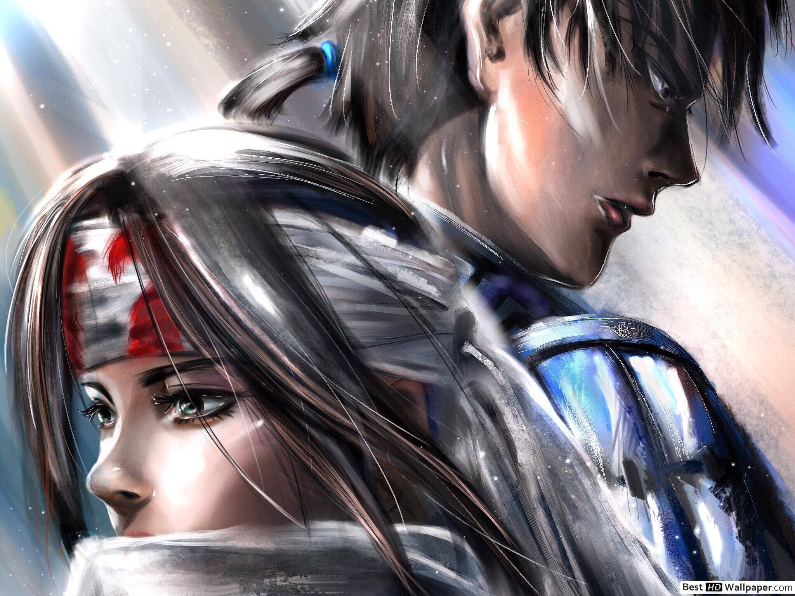
Fear, survival, instinct. Thrown into a foreign land with nothing but hazy memories and the knowledge of their name, they can feel only these three emotions resonating deep within their souls. A group of strangers is given no other choice than to accept the only paying job in this game-like world—the role of a soldier in the Reserve Army—and eliminate anything that threatens the peace in their new world, Grimgar.
When all of the stronger candidates join together, those left behind must create a party together to survive: Manato, a charismatic leader and priest; Haruhiro, a nervous thief; Yume, a cheerful hunter; Shihoru, a shy mage; Mogzo, a kind warrior; and Ranta, a rowdy dark knight. Despite its resemblance to one, this is no game—there are no redos or respawns; it is kill or be killed.
It is now up to this ragtag group of unlikely fighters to survive together in a world where life and death are separated only by a fine line.
KINGDOM (8.00)
Ranking #555 || Popularity || My Rating 7/10
China’s Warring States period, a raging dragon that would raze the land for 500 years, saw many kingdoms rise and fall, making way for the next generation of kings and generals to fight for supremacy. Eventually, seven powerful states emerged from the endless cycle of warfare.
In the kingdom of Qin, Li Xin, a war-orphaned slave, trains vigorously with fellow slave and best friend, Piao, who shares his proud dream of one day becoming a Great General of the Heavens. However, the two are suddenly forced to part ways when Piao is recruited to work in the royal palace by a retainer of the King.
After a fierce coup d'état unfolds, Piao returns to Xin, half dead, with a mission that will lead him to a meeting with China's young King, Ying Zheng, who bears a striking resemblance to Piao. Kingdom follows Xin as he takes his first steps into the great blood-soaked pages of China's history. He must carve his own path to glory on his long quest to become a Great General of the historic Seven Warring States.
Tokyo Revengers (8.31)
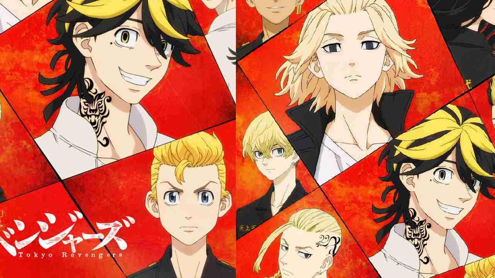
China’s Warring States period, a raging dragon that would raze the land for 500 years, saw many kingdoms rise and fall, making way for the next generation of kings and generals to fight for supremacy. Eventually, seven powerful states emerged from the endless cycle of warfare.
In the kingdom of Qin, Li Xin, a war-orphaned slave, trains vigorously with fellow slave and best friend, Piao, who shares his proud dream of one day becoming a Great General of the Heavens. However, the two are suddenly forced to part ways when Piao is recruited to work in the royal palace by a retainer of the King.
After a fierce coup d'état unfolds, Piao returns to Xin, half dead, with a mission that will lead him to a meeting with China's young King, Ying Zheng, who bears a striking resemblance to Piao. Kingdom follows Xin as he takes his first steps into the great blood-soaked pages of China's history. He must carve his own path to glory on his long quest to become a Great General of the historic Seven Warring States.
Tokyo Revengers (8.31)
Ranking #219 || Popularity #1120 || My Rating 9/10
Takemichi Hanagaki’s second year of middle school was the highest point in his life. He had respect, a gang of friends he could count on, and even a girlfriend. But that was twelve years ago. Today, he’s a nobody: a washed-up nonentity made fun of by children and always forced to apologize to his younger boss. A sudden news report on the Tokyo Manji Gang’s cruel murder of the only girlfriend he ever had alongside her brother only adds insult to injury. Half a second before a train ends his pitiful life for good, Takemichi flashes back to that same day twelve years ago, when he was still dating Hinata Tachibana.
After being forced to relive the very same day that began his downward spiral, Takemichi meets Hinata’s younger brother. Without thinking, he admits to his seeming death before flashing back to the past. Takemichi urges him to protect his sister before inexplicably returning to the future. Miraculously, he isn’t dead. Stranger still, the future has changed. It seems as though Takemichi can alter the flow of time. Given the chance to prevent his ex-girlfriend’s tragic death at the hands of the Tokyo Manji Gang, Takemichi decides to fly through time to change the course of the future.
GINTAMA (8.95)
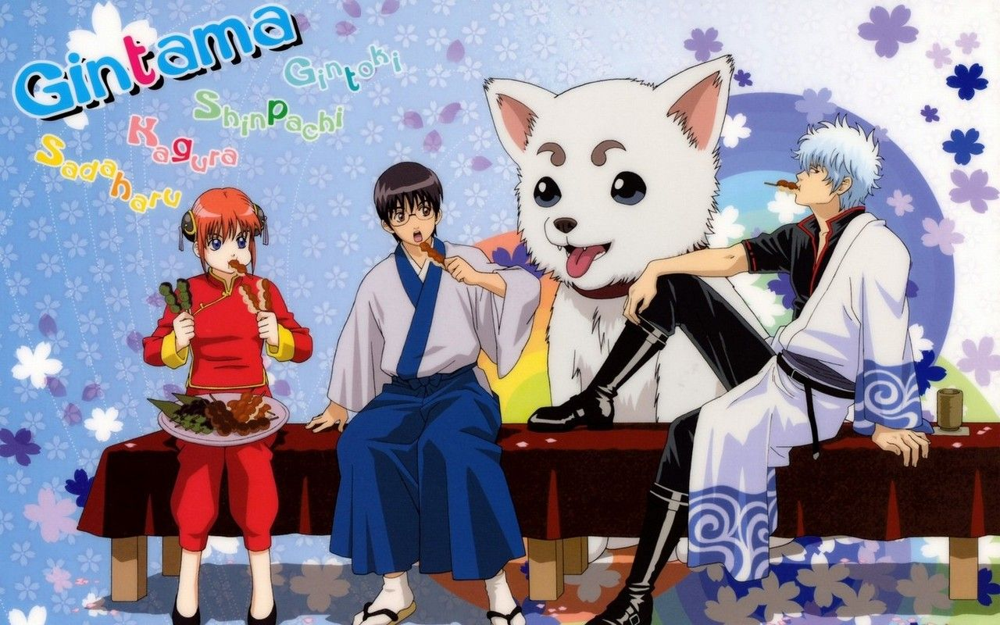
Takemichi Hanagaki’s second year of middle school was the highest point in his life. He had respect, a gang of friends he could count on, and even a girlfriend. But that was twelve years ago. Today, he’s a nobody: a washed-up nonentity made fun of by children and always forced to apologize to his younger boss. A sudden news report on the Tokyo Manji Gang’s cruel murder of the only girlfriend he ever had alongside her brother only adds insult to injury. Half a second before a train ends his pitiful life for good, Takemichi flashes back to that same day twelve years ago, when he was still dating Hinata Tachibana.
After being forced to relive the very same day that began his downward spiral, Takemichi meets Hinata’s younger brother. Without thinking, he admits to his seeming death before flashing back to the past. Takemichi urges him to protect his sister before inexplicably returning to the future. Miraculously, he isn’t dead. Stranger still, the future has changed. It seems as though Takemichi can alter the flow of time. Given the chance to prevent his ex-girlfriend’s tragic death at the hands of the Tokyo Manji Gang, Takemichi decides to fly through time to change the course of the future.
GINTAMA (8.95)
Ranking #15 || Popularity #123 || My Rating 10/10
The Amanto, aliens from outer space, have invaded Earth and taken over feudal Japan. As a result, a prohibition on swords has been established, and the samurai of Japan are treated with disregard as a consequence.
However one man, Gintoki Sakata, still possesses the heart of the samurai, although from his love of sweets and work as a yorozuya, one might not expect it. Accompanying him in his jack-of-all-trades line of work are Shinpachi Shimura, a boy with glasses and a strong heart, Kagura with her umbrella and seemingly bottomless stomach, as well as Sadaharu, their oversized pet dog. Of course, these odd jobs are not always simple, as they frequently have run-ins with the police, ragtag rebels, and assassins, oftentimes leading to humorous but unfortunate consequences.
Who said life as an errand boy was easy?
The Amanto, aliens from outer space, have invaded Earth and taken over feudal Japan. As a result, a prohibition on swords has been established, and the samurai of Japan are treated with disregard as a consequence.
However one man, Gintoki Sakata, still possesses the heart of the samurai, although from his love of sweets and work as a yorozuya, one might not expect it. Accompanying him in his jack-of-all-trades line of work are Shinpachi Shimura, a boy with glasses and a strong heart, Kagura with her umbrella and seemingly bottomless stomach, as well as Sadaharu, their oversized pet dog. Of course, these odd jobs are not always simple, as they frequently have run-ins with the police, ragtag rebels, and assassins, oftentimes leading to humorous but unfortunate consequences.
Who said life as an errand boy was easy?